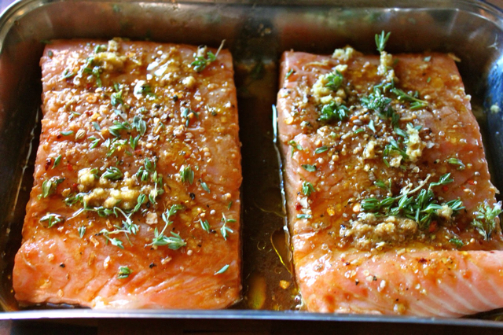

Fish marinading in a shallow dish
This is a simple spice combination to be paired with oil and lemon. I prefer to get the fish marinading early in order for the fish to take
on as much flavor as possible while I am preparing the rest of the meal.
Ingredients
- Olive Oil
- Lemon
- Salt
- Pepper
- Chipotle Powder
- Chili Powder
- Cumin
- Onion Powder
- Garlic Powder
- Paprika
Steps
- Combine dry spices in a single container.
- In a shallow dish, drizzle a tablespoon of olive oil and squeeze a quarter of a lemon.
- Dust the olive oil-lemon mixture with the spice mix.
- Lay fish in marinade and evenly apply the rest of the olive oil, lemon and spice mix to both sides of the fillet.
- Allow the fish to marinade as long as you prefer, or while you prep and cook the rest of the meal.
Back Home